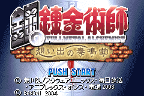
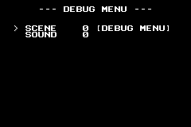

Hagane no Renkinjutsushi - Omoide no Sonata (Japan)
Stateless / Passcode Debug Menu Patch 💾 MultiBoot 🎮 4P Link
Cartridge Identity
- Game Code
BH2J(FamilyBH2)- Header Title
HAGANESONATA- Maker / Revision
B2/ rev0- ROM Size
- 8.0 MiB (8,388,608 B)
- Save Media
None / Unknown- SHA-256
f7eba3b4bbd6e0e3bcfd745aa156c4cbae6e75e14597d827f4be171b6859dc84- Engine / SDK Group
comm-001(196 families)
Screenshots


Debug Menu Re-Enablement Patch (.ips)
Download BH2J-debug.ips (15 B IPS / 2 B delta)
- Hook Mechanism
thumb_imm_scene_override· Patch boot scene selector at 0x0801d7d0 (movs r1, #68 -> movs r1, #0) to boot into scene 0 [DEBUG MENU]- IPS SHA-256
6ef5c52a76cf383b005d183b16c358e0f03852c6db5089e6a414bbf54ad6fecd
gbakit patch apply BH2J-debug.ips original.gba patched-debug.gba

Link Cable & Multiplayer Communications
This title contains detected communication capabilities: 💾 MultiBoot 🎮 4P Link.
Detailed protocol specifications, SIO registers, Joybus commands, and MultiBoot sequences are documented in the Link & Multiplayer Reference.
- Multi-Player SIO (4P)
- 16-bit ring network · SIOCNT (
0x04000128) literals:0x03e8fc,0x03e964,0x03e998· SIODATA32/SIOMULTI0 (0x04000120) literals:0x03ec50 - Single-Cart MultiBoot
- Single-Cartridge MultiBoot (Download Play) client/server handler · Thumb SWI 0x25 (
0xDF25):0x1084d0,0x120108,0x125acc,0x13bd7a
Cartridge Storage Architecture: Stateless / Passcode
Zero non-volatile battery hardware: This cartridge PCB contains ROM only (no SRAM, Flash, or EEPROM chips). Progression is preserved via on-screen passcodes or session-only gameplay. No
.sav file is generated or required.
ROM Assets, Compression & Audio
- BIOS Compression
- LZ77 (
0x10): 573 streams · RLE (0x30): 907 streams - ROM Pointer Tables
- 84 tables (0 pointing to validated compressed streams)
- SDK Backup Tags
EEPROM_V124
Text, Fonts & Scene Data
- Primary Text Encoding
- Shift-JIS (uncompressed) (
11ASCII strings ·200Shift-JIS runs) - Font & VWF Indicators
- VWF Width Table 1bpp Font · BIOS SWIs: BitUnPack
0x10:10· LZ770x11/12:32· Huffman0x13:7· RLE0x14/15:27 - Scene & Packaging
24ROM pointer tables (≥32 entries,4≥200) ·35relativeu32TOCs ·248OAM metasprite hits
Hardware MMIO Subsystems
ppu_display0x8041944,0x805961c,0x806337c,0x807fb3c